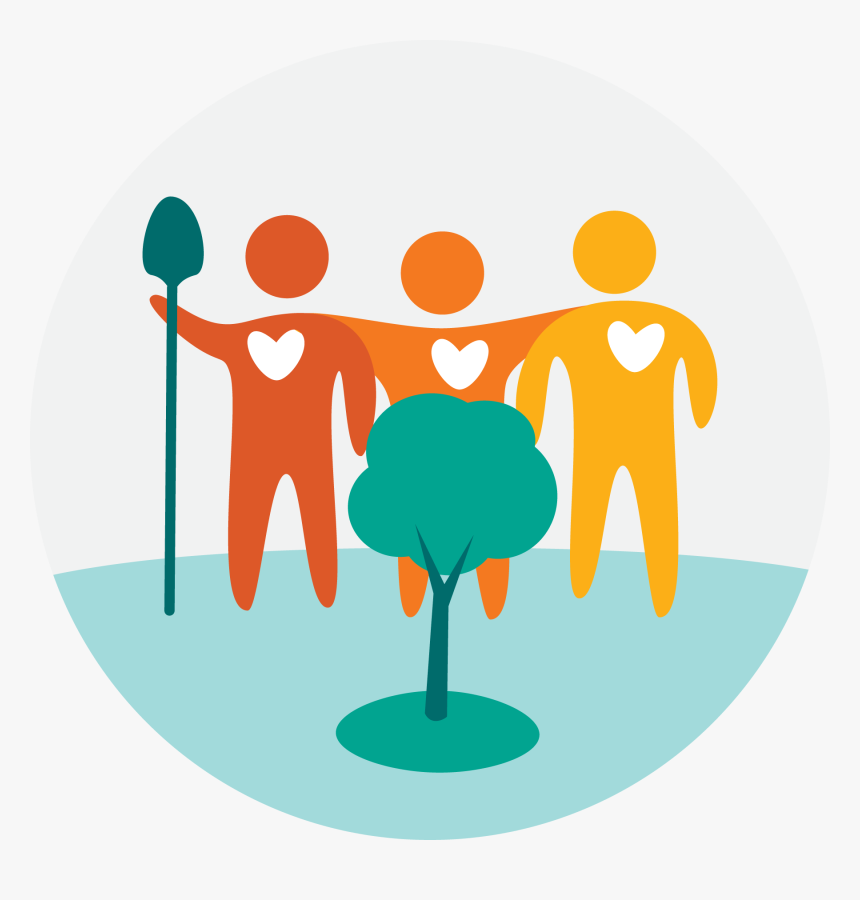

At HARDIN, your satisfaction is our top
priority. We're here to support you every
step of the way, offering expert advice,
responsive customer service, and a
hassle-free shopping experience.

We believe in the power of COMMUNITY
and knowledge-sharing. Join us on
social media, participate in our
workshops, and read our blog for gardening tips and inspiration.
and knowledge-sharing. Join us on
social media, participate in our
workshops, and read our blog for gardening tips and inspiration.
We are dedicated to sustainable
gardening practices. Our products
include ECO-FRIENDLY options, and we
strive to minimize our environmental footprint.
gardening practices. Our products
include ECO-FRIENDLY options, and we
strive to minimize our environmental footprint.

Have questions or need assistance?
We're here to help! Contact us at hardin@gmail.com or visit our contact
page for more information.
We're here to help! Contact us at hardin@gmail.com or visit our contact
page for more information.